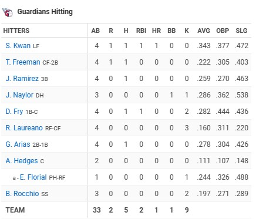

Gameplay/Boxscore
Atlanta Braves
Chris Sale overcame an early setback as he gave up a home run in the first inning, while Marcell Ozuna continued his impressive start to the season, driving in two runs to propel the Atlanta Braves to a 6-2 victory over the Cleveland Guardians on Friday night. This game marked the beginning of a series between the top teams in MLB.
The Braves, who are the current NL East title holders, secured their 10th win in 11 outings, elevating their record to 18-6 and moving them just ahead of the Guardians, the American League frontrunners with an 18-8 record.

Cleveland Guardians
Steven Kwan sent the ball 389 feet down the right-field line, causing it to ricochet within the Chop House restaurant. Ronald Acuña Jr., playing right field for the Braves, watched as Kwan rounded the bases, marking his third career leadoff home run.
Following Kwan’s home run, the Guardians were limited to just one additional hit off Sale before the Braves handed the game to their bullpen.
Scoring Summary
In a thrilling matchup, the Atlanta Braves demonstrated their prowess against the Cleveland Guardians with a decisive 6-2 win. The game commenced with an electrifying moment as Steven Kwan of the Guardians hit a leadoff home run, sending the ball 389 feet into the right-field Chop House restaurant. Despite this early lead for the Guardians, the Braves quickly turned the tables. Harris II’s double and Olson’s single in the fourth and fifth innings, respectively, put the Braves ahead. The sixth inning saw Albies hitting a single, further extending their lead. The game’s climax came in the eighth inning when Arcia hit a massive 387-foot home run, cementing the Braves’ victory and showcasing their offensive strength. The Guardians managed only one more run, concluding the game with the Braves winning game 1 of the series.